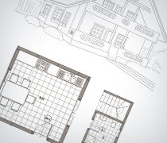
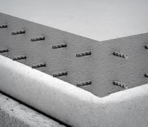
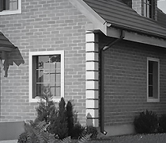
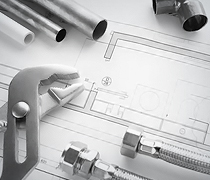
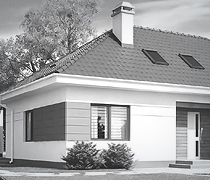
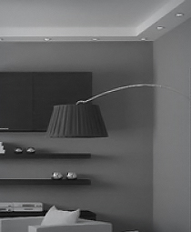

Технология строительства
Кирпичный дом за 120 дней
Проект
Проект кирпичного дома должен содержать основные характеристики будущего здания. Количество этажей, комнат, их расположение. Возведение фундамента, стен, кровли, внешняя отделка, система электрического, водного, газового снабжения – все эти моменты должны быть продуманы и оговорены при создании проекта дома. Помните, что от качества проекта дома будет зависеть скорость и качество работы, а также конечный результат.
Фундамент
Сплошная фундаментная плита, выполнена из железобетона. Плитные фундаменты обладают значительной устойчивостью, устойчивы к просадкам, имеют значительную несущую способность, не требуют применения вертикальной опалубки, используются в условиях «спокойного» рельефа. Плитные фундаменты распределяют нагрузку от стен дома на большую площадь, что позволяет их использовать на самых разнообразных основаниях, грунтах.
Стены
К преимуществам строительства стен из этого материала относят то, что они отличаются стойкостью к огню, вреду от насекомых различных видов. К тому же, кирпичные стены очень долговечны и могут прослужить вам, в среднем, около ста лет. При постройке используется дырчатый кирпич. Внутренние стены и перегородки строятся из полнотелых кирпичей. Стены, на которые предусматриваются повышенные нагрузки выкладываються из кирпича, качество которого составляет «75.
коммуникации
В процессе строительства собственного дома вам придется столкнуться с вопросом проведения коммуникационных средств. К основным коммуникациям относятся водоснабжение, электричество, отопление, канализационная система. Проведение инженерных коммуникаций довольно длительный и затратный процесс. Для проведения всех этих работ необходимо получить специальное разрешение, согласовав проект со всеми существующими инстанциями.
Внешняя отделка
Внешняя отделка является заключительным этапом строительства всего дома. От того, насколько качественно вам удастся это сделать, и будет зависеть, какое впечатление на окружающих будет создавать весь дом в целом. Сооружение, не испытывающее необходимости во внешней отделке – это дом, который облицован отделочным кирпичом. Такой вид кирпича обладает устойчивостью к различным погодным явлениям, низким температурам, и очень привлекательно выглядит.
коммуникации
В процессе строительства собственного дома вам придется столкнуться с вопросом проведения коммуникационных средств. К основным коммуникациям относятся водоснабжение, электричество, отопление, канализационная система. Проведение инженерных коммуникаций довольно длительный и затратный процесс. Для проведения всех этих работ необходимо получить специальное разрешение, согласовав проект со всеми существующими инстанциями.
Внутренняя отделка
При выборе внутренней отделки для дома помните о том, какие материалы целесообразней всего будет использовать при данной работе. Можно использовать штукатурку, одной из разновидностей которой является «мокрая» штукатурка. Вариантов внутренней отделки очень много. Стоит помнить о том, что она должна соединять в себе качественное исполнение всех требований и привлекательный внешний вид. Черновая отделка предполагает проведение необходимых коммуникаций, утепление стен. Во время чистовой отделки больше внимания стоит уделить уже эстетическому ее оформлению.